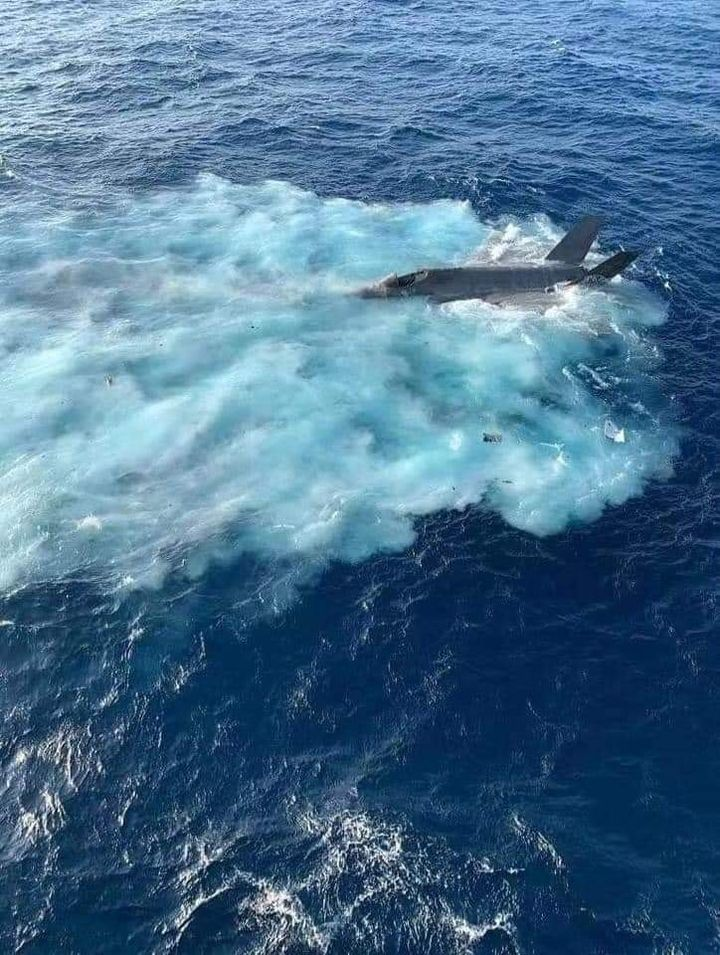
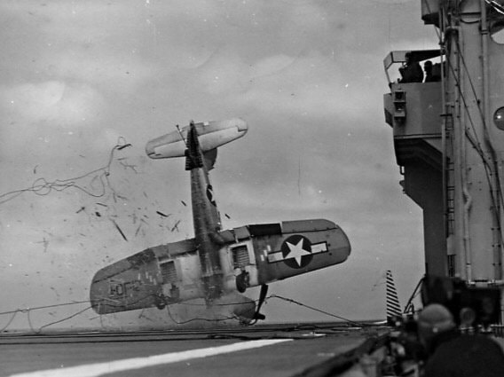
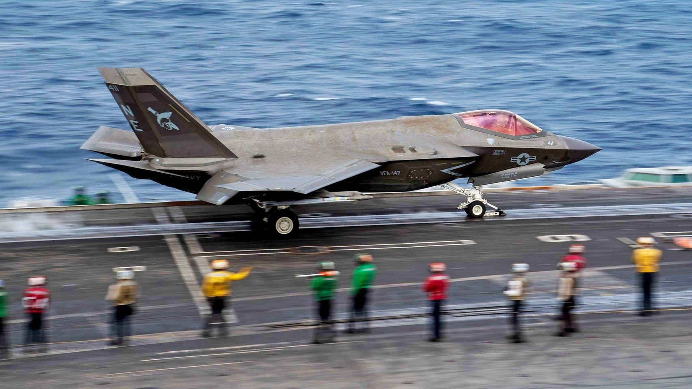
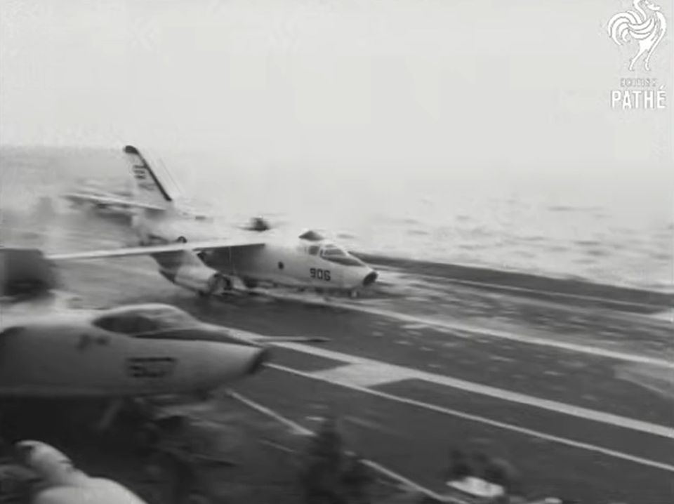
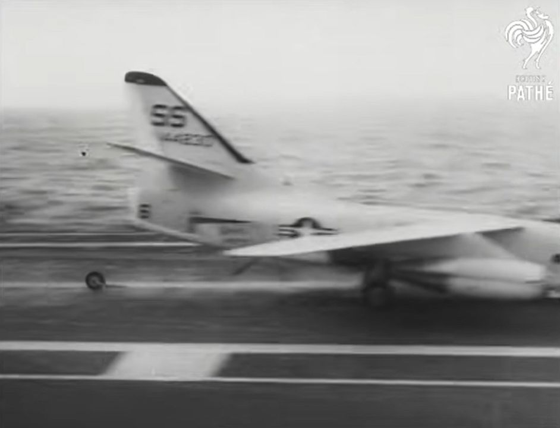
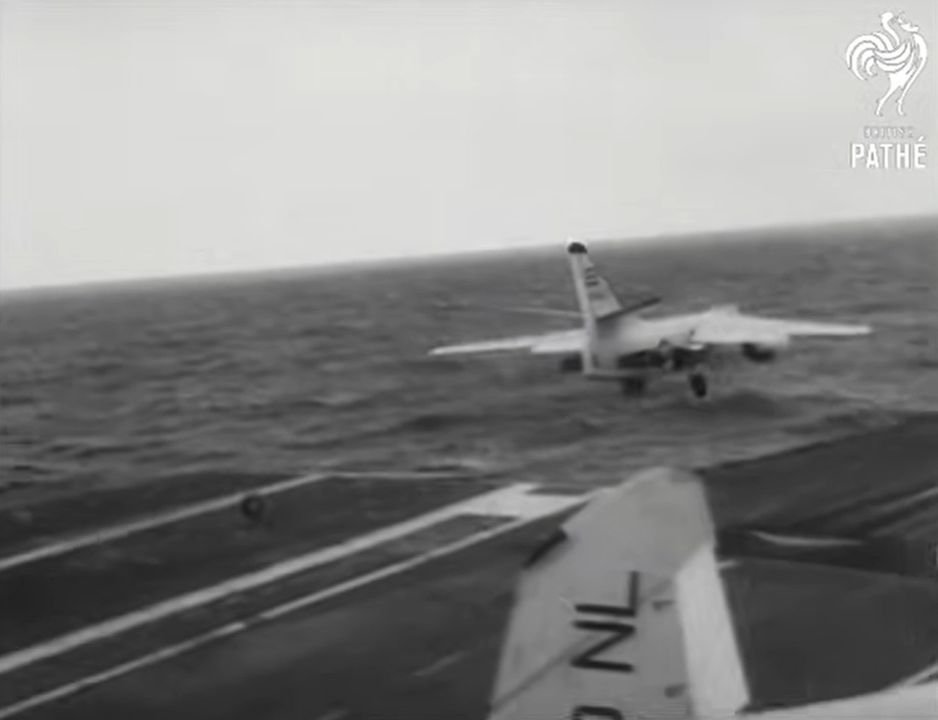
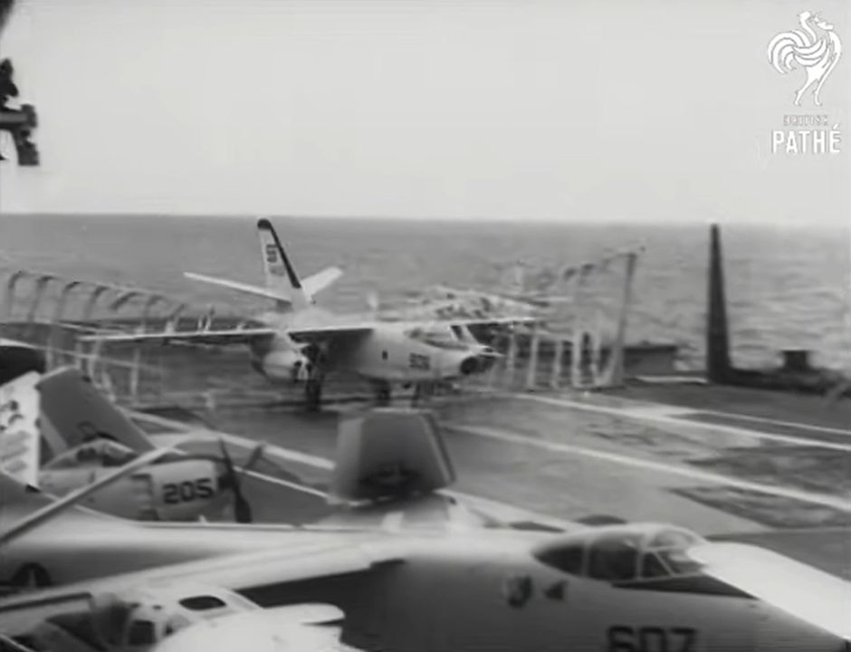
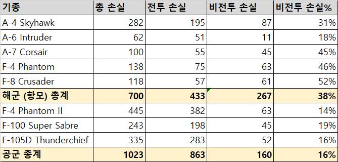
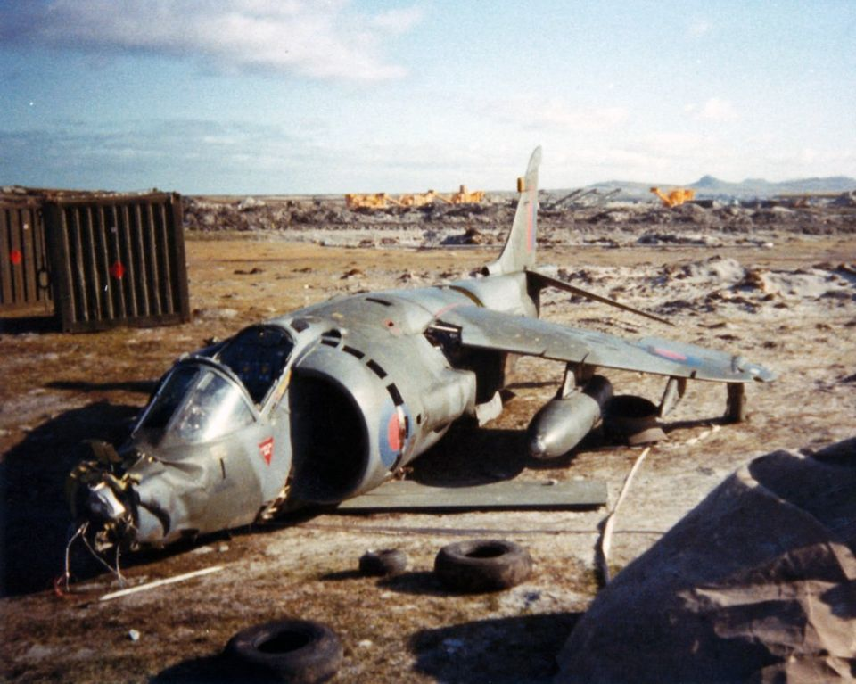

밀리터리 잡담 - 수직착함이 과연 더 안전한가?
게시: 2022-02-03T06:30:21+09:00
<F-35C 사고 원인?> 사진1은 며칠전 남중국해에서 꼬로록한 F-35C의 모습. USS Carl Vinson에 착함하다가 분명히 갑판에 닿았으나 문제가 생겨 조종사 포함 7명의 부상자를 내고 저 모양이 됨.
정확한 사고 경위는 알려진 바 없으나 부상자가 저렇게 여러명 발생한 것을 보면 아마도 arresting wire가 끊어진 듯. F-35C는 날개 면적을 늘리는 등 CATOBAR 함재기에 맞게 설계 변경을 했으나 여전히 착함 속도가 너무 빠르다는 이야기를 들었는데...
사진2는 WW2 때 착함 사고를 내는 Corsair... 어레스팅 와이어도 그냥 쇠줄이 아니라 각종 피스톤과 밸브에 구성된 압력 장치에 연결되어있고, 착함하는 함재기의 남은 연료, 무장 등의 무게에 따라 그 인장력이 결정되어야 한다고. 의외로 매우 복잡한데, 그게 제대로 안 되거나 착함 속도를 딱 맞추지 못하면 저렇게 대형 사고가 남. ** 성능 좋고 안정성 있는 함재기 설계는 진짜 어려워서, 미해군도 제트기 도입 이후에 F-18 이외에는 정말 만족스러운 함재기가 없다고. ** 역시 우리 경항모는 성능이 떨어지더라도 상대적으로 착함이 안전한 F-35B로 그냥 가야
 
<스텔스가 꼭 답일까> 함재기의 가장 중요한 덕목은 일단 사고없이 함대 위를 가능한 한 오래 자주 날아다녀야 한다는 것. 그러자면 유지보수가 쉬워야 하는데 F-35C는 USS Carl Vinson에서 데뷔한지 불과 몇개월 되지 않아 표면에 녹이 잔뜩 슬고 있다고.
** 스텔스 도료에 포함된 철 성분이 부식되기 때문이라고

<항모 착함의 위험성> 1963년, 미드웨이급 항모 USS Coral Sea (CV-43)에서 발생한 함재폭격기 Douglas A-3 Skywarrior의 착함 사고. 착함 속도와 중량이 지나쳤는지 nose gear가 부러지며 A-3는 그대로 비상이륙. 3번째 사진에서 데굴데굴 굴러가는 nose gear의 바퀴가 보임. 착함하다가 어레스팅 와이어에 후크를 걸지 못하는 사고는 진짜 위험한 상황. 착함하려니 당연히 엔진 출력을 낮추고 속도를 줄이는데, 후크를 못걸면 짧은 비행갑판을 그대로 통과하여 바닷물로 첨벙 뛰어들기 때문. 많은 경우 조종사가 익사함. 그래서 항모에 착함할 때는 지상의 일반 활주로에 착륙할 때보다 더 빠른 속도로 착함하고, 그것도 모자라 바퀴가 갑판에 닿는 순간 조종사는 반드시 throttle을 최대 출력으로 밀어야 한다고. 이걸 'bolter'라고 부르는데, 이는 혹시라도 후크를 못걸 경우 저 A-3처럼 비상 이륙하기 위한 것. 물론 대부분의 경우는 후크를 제대로 걸게 됨. 그러니 시속 약 300km/h 가까운 속도로 착함하는 FA-18 Hornet의 경우 불과 몇 초 안에 0km/h로 정지하니 그 충격을 기체와 조종사가 그대로 받아내야 하는 셈. 그래서 함재기는 기체 수명도 짧음. 조종사 수명은... 음.... 결국 이 함재폭격기는 어떻게 착륙했을까? 그냥 인근 바다 위에서 낙하산 탈출하기엔 너무 아까운 기체이므로 4번째 사진처럼 그물로 강제 착함. 모두 무사. ** A-3는 너무 크고 무거운 기체이다보니 사고가 잦았는데, 일부에선 우수한 조종사는 모조리 전투기로 가는 바람에 조종사가 미숙해서 저렇게 사고율이 높은거 이나냐는 소리도 있었으나 실제로는 위험한 기체라서 더더욱 우수한 조종사들만 태웠음. ** 우리나라 공군에서도 F-15나 F-35 같은 주력 최신기 모는 조종사와 F-5처럼 낡고 가벼운 전투기 조종사를 어떤 기준으로 배치하는지 모르겠음. 그러나 최근 F-5에서 순직하신 심소령 같은 경우는 (몇 다리 건너 들어보니) 진짜 자타가 공인하는 엘리트 중의 엘리트였다고. 일반 공군 병사들에게도 그렇게 신사적으로 대해주었던 인성갑.
   
<배 탔다가 바다에 아이폰 떨어뜨렸다고 속상해하지 말라> CATOBAR (Catapult Assisted Take-Off But Arrested Recovery) 방식의 미국식 수퍼캐리어가 좋은 건 다들 안다. 그러나 그건 비싼 걸 떠나서 비전투 손실이 너무 많다. 미해군 조종사들이 그걸 누워서 떡먹듯이 해내는 것은 그만큼 많은 훈련을 했기 때문이다. 중궈애들의 랴오닝, 산둥 항모를 보고 미해군이 비웃으면서도 우려를 감추지 못하는 것이 '생각보다 이착함 잘 해내네?' 라고 생각하기 때문. 우리 해군에서 가장 소중한 것은 군함이나 예산이 아니라 사람, 특히 조종사. 우리가 CATOBAR 방식의 경항모 운영하면 2~3년마다 기체 몇대와 조종사 1명씩 희생시킬 수도 있다. 그러므로 우리 경항모는 일단 F-35B로 시작해야 한다. 수직 착함은 어레스팅 와이어에 후크를 거는 방식보다는 훨씬 안전하기 때문. 아래 표는 비엣남 전쟁에서 미해군(육상발진기 제외) 함재기와 미공군 항공기의 전투/비전투 손실률. 전체 손실 10대 중 2대는 CATOBAR 방식의 위험성 때문에 이착함하다가 희생되었다고 볼 수 있다. 참고로 수직착함하는 영국 Harrier들은 포클랜드 전쟁에서 총 10대의 Harrier를 잃었는데 5대는 대공미쓸과 대공포에, 2대는 공중 충돌 사고로 잃었고, 딱 2대만 이착륙 사고로 잃었다. ** 1대가 빈다고? 1대는 항모 갑판에 있던 것이 거친 풍랑 때문에 바다에 떨어졌... ** 그러니 배 탔다가 바다에 아이폰 떨어뜨렸다고 속상해하지 말라. 누구는 전투기를 떨어뜨렸다.

<수직이착함이 상대적으로 안전한가> 안전함. 포클랜드 전쟁에 동원된 해리어들은 총 42대 (해군 Sea Harrier FRS 28대 + 공군 Harrier GR3 14대). 이중 5대가 전투 중 격추되고 5대가 비전투 손실로 상실되었는데, 이착함 사고에 의한 손실은 딱 2대. 1대는 해군 Sea Harrier FRS (기체번호 ZA192)인데, 이함은 성공적으로 했으나 곧 엔진 결함 등의 원인으로 추락하며 공중 폭발. 조종사 사망.
나머지 1대는 공군 Harrier GR3 (기체번호 XZ989)인데, 항모에 착륙한 것도 아니고 포클랜드 섬의 임시 활주로에 수직 착륙하다 엔진 결함으로 동력을 상실하여 꽤 심하게 지상에 충돌하여 내려앉음. 원래 XZ989에는 이것저것 결함이 있었다고 함. 조종사는 사출하지 않았고 무사.
아래 사진이 기체번호 XZ989의 사고 후 모습. 저렇게 부서진 기체는 저 임시 기지의 영국 공군 정비사들이 반갑게 달려들어 각종 부품을 뜯어내 다른 Harrier GR3들의 정비용으로 사용했으며, 전쟁이 끝난 뒤 남은 잔해는 독일에 있는 영국 공군기지로 가져가 교보재 용도로 사용했다고. 그러나 수직이착함이 어레스팅 와이어에 후크를 거는 CATOBAR 방식의 항모 착함보다 안전하다는 것과는 별개로, Harrier는 기계적으로 불안정한 기체로 악명 높았고, 특히 미해병대가 채택한 Harrier AV-8B는 미해공군 통틀어 가장 사고율이 높은 기체로 악명 높았다고.
